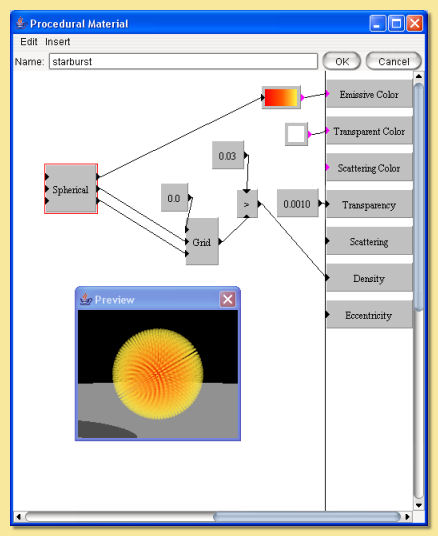

|  |
This material is based on the Grid pattern to which a spherical transform is partly applied.
Note than the R output from the spherical output is not fed into the grid; rather a 0 value is the input
which stretches the grid pattern radially outwards. The resulting grid pattern is then evaluated with the greater than function to pick out points within a radius of 0.03, i.e thin 'spokes' (the Grid spacing is set at 0.1). This is fed into the density function so that the 'spokes' have a high density and everywhere else is zero. Transparency is set to a very low (but non-zero) value to produce a virtually opaque material. Finally, the R output of the Spherical transform is fed into a custom colour map to produce a pattern whose colour varies with distance from the centre. The Integration Step Size was reduced to 0.01 to allow more accurate rendering of the fine (0.03) spokes. |